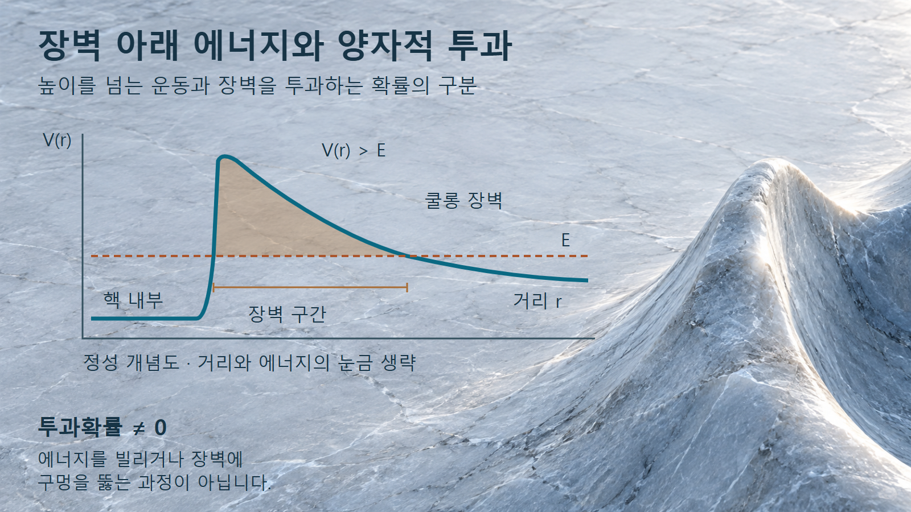
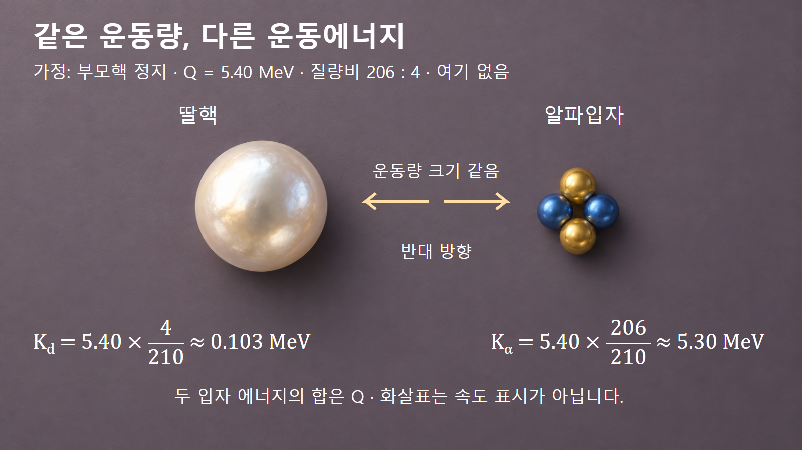

방사성붕괴와 시간 · 042
알파붕괴
헬륨핵 방출·장벽 투과와 두 입자의 에너지 분배
알파붕괴에서는 헬륨핵의 방출로 원소가 바뀌고, 알파입자와 딸핵이 에너지를 나누어 갖습니다. 구성 입자 수와 운동량 보존을 차례로 따라가며 그 변화를 확인합니다.
헬륨핵 방출과 원소의 변화
알파붕괴는 원자핵이 양성자 두 개와 중성자 두 개로 이루어진 알파입자를 방출하는 변화입니다. 알파입자는 42He로 쓰는 헬륨-4의 핵이며, 전자 두 개까지 갖춘 중성 헬륨 원자와 구별합니다. 양성자 수인 원자번호 Z가 2 줄어들기 때문에 붕괴 뒤에는 다른 원소가 됩니다.
붕괴 전 핵을 부모핵, 남은 핵을 딸핵이라고 부릅니다. 양성자와 중성자를 합한 질량수 A는 4 줄고, 중성자 수 N도 2 줄어듭니다. 이 정수 관계는 어떤 딸핵이 만들어지는지 찾는 첫 단서입니다. 다만 질량수 보존이 정지질량의 합까지 그대로라는 뜻은 아닙니다. 방출에너지는 초기와 최종 상태의 질량 차이에서 나옵니다. [2]
핵 내부의 결합과 장벽 투과
핵 가까이에서는 짧은 거리에서 작용하는 핵력이 핵자들을 묶습니다. 바깥에서는 양전하를 띤 딸핵과 알파입자 사이의 전기적 반발이 중요해집니다. 두 효과를 거리별 퍼텐셜에너지로 그리면 내부의 우물과 바깥으로 나가는 길의 장벽을 생각할 수 있습니다. 퍼텐셜에너지는 위치에 따라 상호작용에 저장된 에너지를 나타냅니다.
고전적으로는 에너지가 장벽보다 낮은 입자가 그 구간을 통과하지 못합니다. 양자역학에서는 입자의 상태를 파동함수로 나타내며, 장벽 안에서 감소한 파동함수가 바깥까지 이어져 검출될 확률이 생길 수 있습니다. 이를 터널링, 곧 양자적 장벽 투과라고 부릅니다. 장벽을 넘을 에너지가 부족하다는 고전적 판단과 투과확률이 0이라는 양자적 판단은 같지 않습니다.

‘터널’은 핵에 실제 구멍이 생긴다는 뜻이 아닙니다. 또한 순간적으로 에너지를 빌려 장벽 위로 올라간다는 설명도 필요하지 않습니다. 에너지와 장벽 형태에 따른 확률 차이는 수명 차이로 이어집니다. [3] 실제 반감기를 구하려면 핵구조와 방출 경로의 조건까지 필요합니다.
예시 1: 폴로늄에서 납으로의 변화
폴로늄-210의 알파붕괴를 따라가겠습니다. 부모핵 21084Po에는 양성자 84개와 중성자 126개가 있습니다. 알파입자가 나가면 양성자는 84 − 2 = 82개, 중성자는 126 − 2 = 124개가 남습니다. [1]
원자번호 82는 납이며, 질량수는 82 + 124 = 206입니다. 따라서 관계는 21084Po → 20682Pb + 42He로 나타냅니다. 왼쪽과 오른쪽의 질량수는 210 = 206 + 4, 원자번호는 84 = 82 + 2로 각각 맞습니다. 이 확인은 특정 입자가 빠져나간 뒤 핵종 표기를 잘못 붙이는 오류를 막습니다.
새 원소가 생겨도 모든 알파붕괴가 즉시 안정한 핵으로 끝나는 것은 아닙니다. 이 사례의 납-206과 다른 붕괴계열의 딸핵은 구별해야 합니다. 생성된 핵종이 다시 붕괴하는지는 그 핵종의 자료로 판단합니다.
예시 2: 알파입자와 딸핵의 에너지 분배
정지한 부모핵에서 두 입자만 나가고 딸핵의 여기나 감마선 방출이 없다고 가정하겠습니다. 분배할 에너지 Q를 5.40 MeV, 딸핵과 알파입자의 질량비를 206:4로 근사합니다. 이 값은 계산 원리를 위한 가정이며 특정 붕괴 분기의 정밀 에너지 자료가 아닙니다. MeV는 에너지 단위인 백만 전자볼트입니다.
처음 운동량이 0이므로 두 입자의 운동량은 크기가 같고 방향이 반대여야 합니다. 비상대론적 운동에너지는 K = p2/(2m)이므로 같은 운동량 p를 가진 입자 중 질량 m이 작은 쪽이 더 큰 운동에너지를 받습니다. 에너지는 반반으로 나뉘지 않습니다.
에너지 합과 운동량 보존을 함께 풀면 알파입자의 몫은 Kα = Q × 206/210, 딸핵의 몫은 Kd = Q × 4/210입니다. 5.40을 대입하면 각각 5.297… MeV와 0.102857… MeV입니다. 알파입자는 약 5.30 MeV, 딸핵은 약 0.103 MeV를 받으며 두 값의 합은 가정한 5.40 MeV입니다.

딸핵이 반대쪽으로 움직이는 현상을 반동이라고 부릅니다. 가벼운 입자가 대부분을 가져가지만, 작은 딸핵 반동도 에너지 장부에서 사라지지 않습니다. [1] 실제 측정에서는 여기상태로 가는 분기가 있으면 그 에너지부터 분리해야 합니다.
짧은 비정과 계측·방호의 연결
알파입자는 물질을 지나면서 주변 원자의 전자를 떼어내는 전리를 일으킵니다. 방사성붕괴로 나오는 알파입자는 짧은 경로에 에너지를 집중적으로 전달하며, 멈출 때까지의 거리를 비정이라고 부릅니다. 외부 노출과 체내 유입은 구별해야 합니다. [4] 피부 바깥층의 차단 효과를 체내 조직에도 그대로 적용할 수는 없습니다.
계측에서도 이 짧은 비정이 중요합니다. 시료와 검출기 사이의 물질에서 알파입자가 멈추거나 에너지를 잃으면 검출 신호가 달라집니다. 거리별 측정 교육 실험은 계수율을 거리만의 역제곱 관계로 설명할 수 있는지 점검하게 합니다. [2] 따라서 측정값을 비교할 때는 배치와 중간 물질의 조건을 함께 기록해야 합니다.
흡입·섭취 등으로 알파방출핵종이 몸 안에 들어간 경우에는 조직 가까이에서 방출이 이어질 수 있습니다. 단순히 알파입자 한 개의 에너지만으로 개인의 선량을 정하지 않고, 체내에 들어온 양과 머무는 위치·시간까지 고려해야 합니다. 여기의 에너지 분배 계산은 개인 피폭량을 계산한 결과가 아닙니다.
서로 다른 보존량과 관측량의 구분
알파입자가 네 핵자로 이루어진다는 사실은 붕괴에 필요한 시간이 모두 같다는 뜻이 아닙니다. 입자 구성, 방출에너지, 붕괴확률은 서로 다른 정보입니다. 또 분출되는 입자의 속도와 딸핵의 속도가 같을 필요도 없습니다. 위의 두 입자 모형에서 같다고 한 것은 운동량의 크기입니다.
아래 비교는 하나의 붕괴 사건을 읽을 때 어떤 수를 보존하고 어떤 수를 새로 계산해야 하는지 구별한 것입니다. 이를 혼동하면 핵종은 맞게 썼더라도 에너지 분배나 실제 측정값을 잘못 해석할 수 있습니다.
| 대상 | 사건 전후 관계 | 판단의 경계 |
|---|---|---|
| 질량수·전하 | 합이 보존 | 정지질량 합이 같다는 뜻은 아닙니다. |
| 두 입자 운동량 | 부모핵 정지 시 같은 크기·반대 방향 | 속도와 운동에너지는 서로 다릅니다. |
| 방출에너지 | 운동에너지와 여기 등으로 분배 | 알파입자의 에너지와 Q를 구별합니다. |
| 검출 계수 | 방출 뒤 경로와 응답에 의존 | 검출되지 않은 방출이 있을 수 있습니다. |
알파붕괴 해석의 핵심 연결
알파붕괴의 첫 단계는 네 핵자로 이루어진 방출입자를 확인하고, 남은 양성자와 중성자 수로 딸핵을 찾는 것입니다. 다음으로 장벽 투과가 방출확률을 설명한다는 점과, 운동량 보존이 방출 뒤 에너지 분배를 결정한다는 점을 연결합니다.
방출 이후에는 입자가 물질에 에너지를 전달하므로 핵 안의 변화와 검출기·조직에서의 작용을 구별해야 합니다. 이렇게 핵종 변화, 터널링, 두 입자 운동, 물질과의 상호작용을 이어 읽으면 ‘무거운 핵에서 작은 덩어리가 나온다’는 그림을 실제 계산과 판단으로 확장할 수 있습니다.